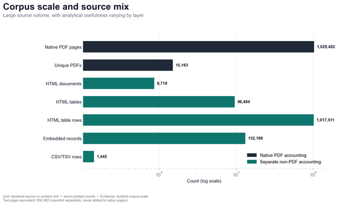

F01 · approved for rendering
Corpus scale and source mix
Large source volume, with analytical usefulness varying by layer
- Evidence
- audited scale
- Sample
- seven distinct counts
Counts describe distinct source and extraction units. Native PDF pages and the separate text-page equivalent are reported independently; neither is a measure of analytical support.
Does not show: A national wage gap, representative prevalence, regression result, or causal effect.
Analytical unit: source/content unit. Strict and broader evidence remain labeled. Canonical adjudicated whole-corpus analytical tables; no new sources.